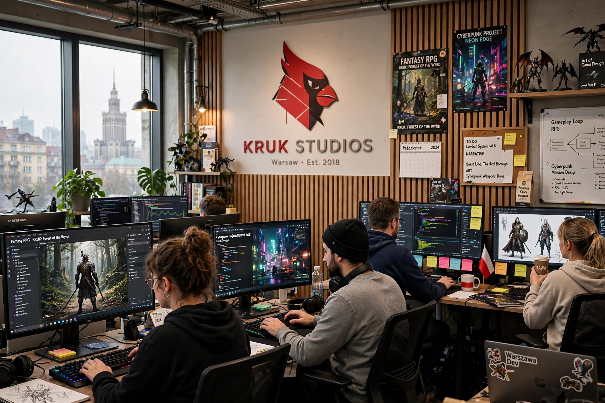

CD Projekt Red (stylised CD PROJEKT RED) is a Polish video game developer based in Warsaw, founded in 2002 as the development studio of CD Projekt. It is known for The Witcher series and Cyberpunk 2077.

CD Projekt began in 1994 localising games for Poland. Its studio adapted Andrzej Sapkowski's Witcher books: The Witcher (2007), Assassins of Kings (2011) and Wild Hunt (2015), the latter a major critical and commercial success with expansions Hearts of Stone and Blood and Wine. The card game Gwent spun off from Wild Hunt.
Released in December 2020, Cyberpunk 2077 sold strongly on pre-orders but launched with serious technical problems, especially on older consoles, leading to refunds, removal from the PlayStation Store for a period, and reputational damage. Extensive patches and the acclaimed Phantom Liberty expansion (2023) substantially rehabilitated it.
The studio shifted future projects from its proprietary REDengine to Unreal Engine 5 under a partnership with Epic Games, announcing a new Witcher saga and a Cyberpunk sequel, with a North American studio in Boston. See The Witcher 3 and GOG.com.